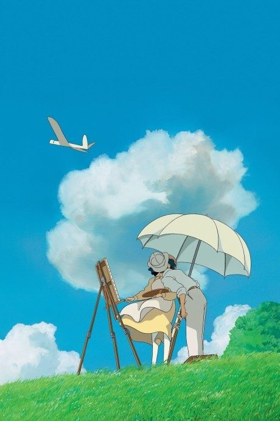
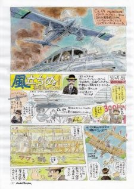

Anime
MangaThe Wind Rises
風立ちぬ
The anime takes the story to Film.
8.0AniList
—Animeter
1 epMovie
Anime finished. Where does the manga pick up?
StatusFully adapted
The film is Miyazaki's own adaptation of his short 2009 manga of the same name, a fictionalised account of Jiro Horikoshi's life. The manga is a short companion read rather than a continuation.